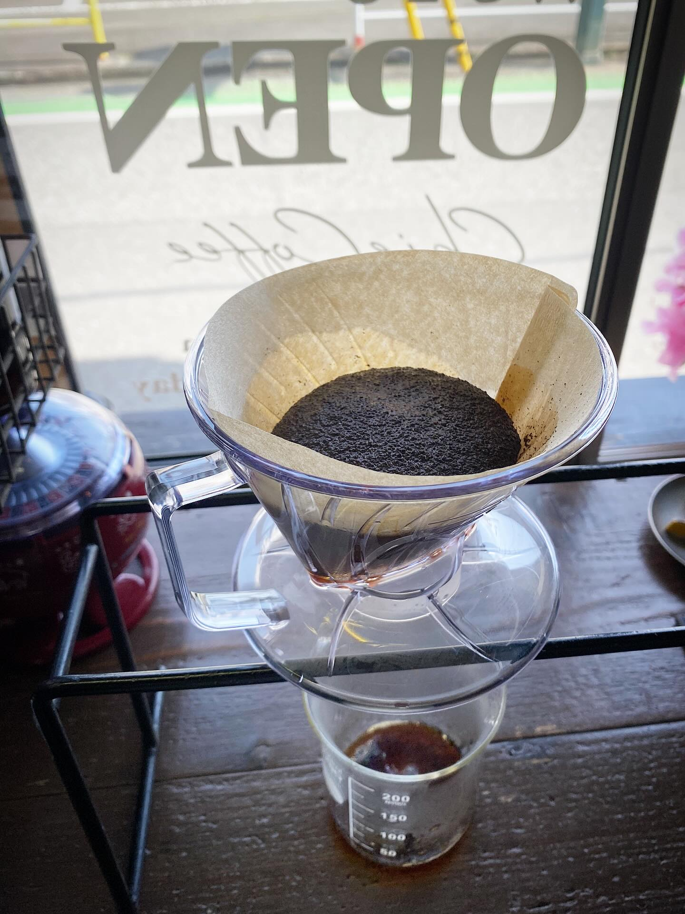
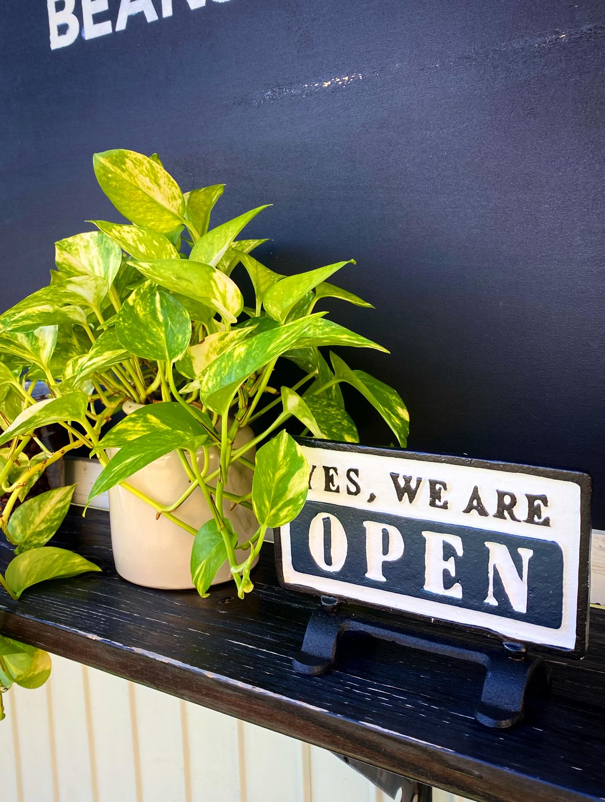

ハンドドリップコーヒー
注文後に一杯ずつ、窓辺のドリッパーで。待つ時間ごと味わう一杯です。
COFFEE & BEANS — KAMIFUKUOKA
一杯ずつ、手渡しの珈琲。
上福岡駅東口・駅前名店街のコーヒースタンド。
9:00–15:00｜月・火定休｜テイクアウト専門
ABOUT
上福岡駅東口から歩いて3分、駅前名店街の角に立つ緑色の小屋がChieCoffeeです。注文を受けてから一杯ずつハンドドリップで淹れる、テイクアウト専門のコーヒースタンド。少量ずつ自家焙煎した珈琲豆とドリップバッグも、この小さな窓口から手渡ししています。
道路に面した店先だから「車にお気をつけください」と呼びかけたり、買ったあとに荷物を整えられるカウンターを増設したり。立ち寄る人の小さな時間まで気にかけているお店です。

駅前名店街の、いつもの角で。
SHOP INFO
| 店名 | ChieCoffee（チエコーヒー） |
|---|---|
| 住所 | 埼玉県ふじみ野市上福岡1-2-16 |
| アクセス | 東武東上線 上福岡駅東口 徒歩約3分（駅前名店街） |
| 営業時間 | 9:00–15:00 |
| 定休日 | 月曜・火曜 |
| お支払い | 現金のみ |
CONTACT
お問い合わせはメールが確実です（Instagramのダイレクトメッセージは気づきにくい旨、公式に案内されています）。定休日の月・火はお返事がお休みです。